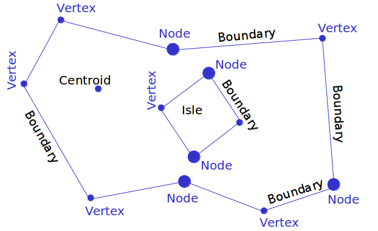
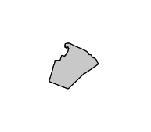
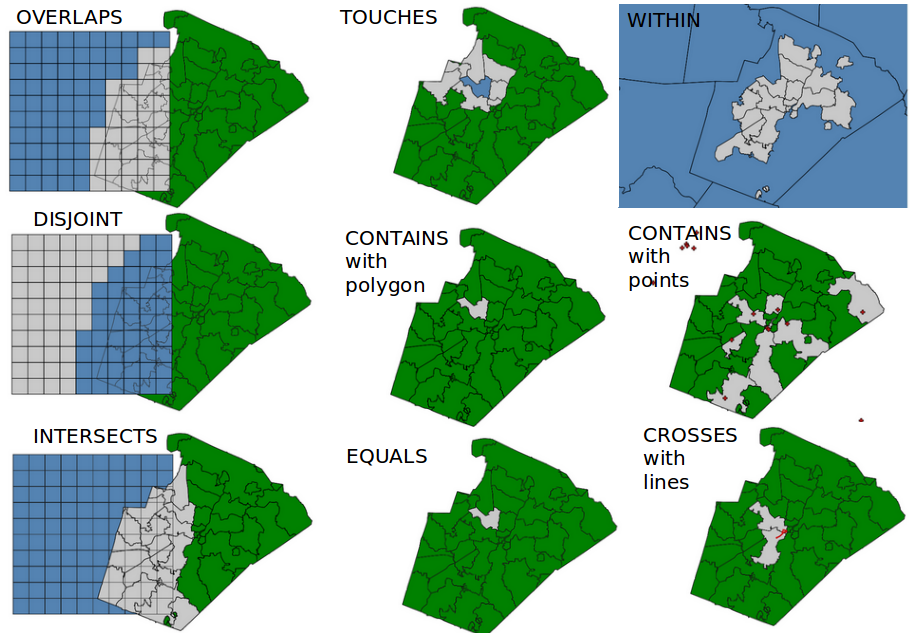
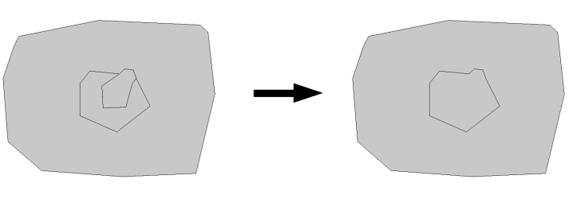

Introduction to vector data in G7

Session Objectives
- Why a topological vector data model
- Topological vector data model in GRASS GIS 7
- Vector feature extraction
- Vector geometry dissolving
- Geometry editing/digitizing
- Import/export
- Capabilities of GRASS GIS' vector engine
What is vector topology?
Non-topological vector formats:
 E.g. OGC Simple Features, ESRI shapefiles
E.g. OGC Simple Features, ESRI shapefiles
Geometry types: points, lines, polygons
→ Problem: replicated boundaries for adjacent areas
Faster computations, but extra work for maintenance
Non-topological polygon map being generalized
(all polygons are treated independently, leading to potential errors)
True topological vector format:

- Areas are constructed from boundaries
- Boundaries are shared between adjacent areas
Slower computations, but less (nearly no manual) maintenance
Topological polygon map being generalized
(no errors possible since common linesare shared)
GRASS GIS 7 Vector features
Native vector format
- Vector topology
- m:n mapping of geometry features to attributes
- Support of vector layers
- OGC Simple Features ←→ Topological Vector Conversion
- Database Management system (DBMS) with SQL support
- SQLite (default DB backend), PostgreSQL + PostGIS, MySQL, ODBC (, DBF)
GRASS GIS Vector model
 Vector geometry types
Vector geometry types
- Point
- Centroid
- Line
- Boundary
- Area (Boundaries + Centroids)
- face (3D area)
- [kernel (3D centroid)]
[volumes (faces + kernel)]
Geometry is true 3D when: x, y, z
Basic geometry types (1)
Basic geometry types, they can be edited directly:
- Point
- Centroid
- Line
- Boundary
A GRASS vector map can contain a combination of several different types

Derived geometry types (2)
Derived geometry types, constructed from basic types
- Area (closed ring of boundaries + centroid)
- Isle (closed ring of boundaries, no centroid)
- Node (at both ends of lines/boundaries)
Isles and Nodes are not visible to the user

GRASS GIS topological vector digitizer

Exercise: Vector feature extraction
Extract by attributes
GRASS GIS module:
v.extract
Input: boundary_county
Output: boundary_wake

Command:
v.extract input=boundary_county \
output=boundary_wake \
where="NAME = 'WAKE'"
Vector feature select operations: v.select (GEOS)

Exercise: Vector feature extraction
Extract with another vector (selecting full vector)
GRASS GIS module:
v.select
Input: boundary_wake, railroads
Output: railroads_wake
Command:
v.select ain=railroads bin=boundary_wake\
out=railroads_wake atype=line \
btype=area operator=overlap
Vector feature overlay operations
Boolean operators
GRASS GIS module:
v.overlay

Extract with another vector (clipping vector)
GRASS GIS module:
v.overlay
Input: boundary_wake, railroads
Output: railroads_wake_clip
Command:
v.overlay ain=railroads bin=boundary_wake \
out=railroads_wake_clip atype=line \
btype=area operator=and
try operator=not
Dissolving vector boundaries
Combination of several areas into one area based on common categories or attributes
Dissolving common boundaries between the two interior areas: 
Exercise: Vector feature extraction
Dissolving with categories
GRASS GIS module:
v.dissolve
Input: boundary_county
Output: nc_boundary
Command:
v.category in=boundary_county type=centroid \
out=boundary_county_cat2 layer=2 \
cat=1 step=0 option=add
v.db.addtable map=boundary_county_cat2 layer=2
v.dissolve in=boundary_county_cat2 \
out=nc_boundary layer=2 column=cat
GRASS GIS topological vector digitizer
GRASS Vector data exchange
Import of vector maps
- v.in.ogr module
v.import (it also offers reprojection on the fly)!
Always the full map is imported.
Export of raster maps
mv.out.ogr module
Always the full map is exported.
- OGR supported > 80 vector formats
Creating a map from Spreadsheet file (MS Excel file, OpenDocument ODS, CSV file):
A new vector point map can be directly created from a selected sheet in a spreadsheet:
the z coordinate is optional
v.in.db table=List1 x=long y=lat z=height \
output=meteodata \
driver=ogr datatabase=meteodata.xls
Note that in this example the key option is omitted (so the key column is then automatically added)
Vector capabilities
Example vector module groups
Topological geometry feature digitizing/editing
Linear referencing (LRS) – v.lrs.*:
Network analysis – v.net.*: